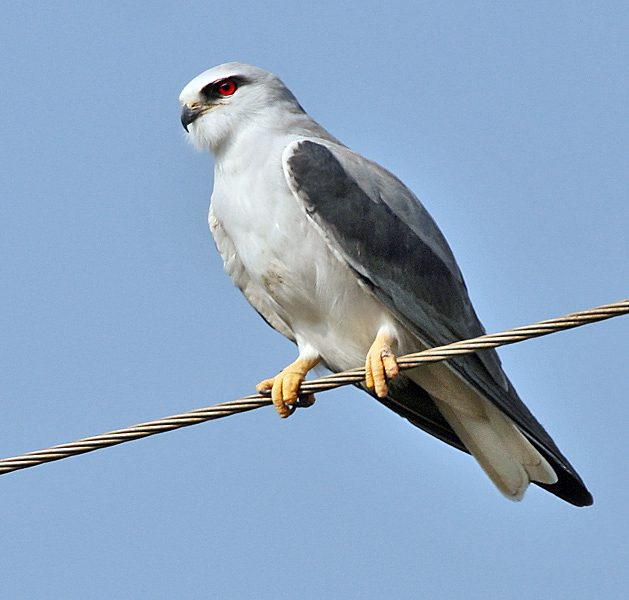

कपसीBlack-winged Kite
Elanus caeruleus · Accipitridae · BRD-0038

- Scientific name
- Elanus caeruleus (Desfontaines, 1789)
- Family
- Accipitridae
- Hindi
- कपसी
- Status here
- native
- IUCN
- LC
When to look कब देखें
Present all year.
कपसी / Black-winged Kite
Elanus caeruleus (Desfontaines, 1789) — Accipitridae
कपसी (ब्लैक-विंग्ड काइट) — पूर्वी उत्तर प्रदेश के खुले घास के मैदानों, कृषि क्षेत्रों और बंजर भूमियों में उड़ने वाला एक छोटा, अत्यंत फुर्तीला और आकर्षक शिकारी पक्षी (raptor) है। इसकी सबसे बड़ी पहचान इसका सफ़ेद और चमकीला भूरा (pale grey and white) शरीर, इसके पंखों पर बने बड़े जेट-काले रंग के कंधे के धब्बे (jet-black shoulder patches) और इसकी चमकीली अंगारे जैसी लाल आँखें (ruby-red eyes) हैं। यह खुले मैदानों के ऊपर हवा में एक ही जगह पंख फड़फड़ाते हुए स्थिर उड़ने (hovering flight) में माहिर है, जहाँ से यह नीचे ज़मीन पर रेंगने वाले चूहों और कीड़ों पर नज़र रखता है और अचानक झपट्टा मारकर उन्हें अपने तेज़ पंजों में दबोच लेता है। यह किसानों का एक बहुत बड़ा मददगार पक्षी है जो खेतों में चूहों की आबादी को नियंत्रित रखता है।
Quick Identification त्वरित पहचान
| Feature | Description |
|---|---|
| Size | Small raptor (30–35 cm total length); falcon-like shape with broad wings |
| Colouration | Pure white underparts; ash-grey back and upper wings; contrasting black shoulder patches |
| Eyes | Large, staring, forward-facing bright ruby-red eyes in adults |
| Hovering | Flies into the wind and hovers stationary in mid-air with wings flapping rapidly |
| Flight | Light, buoyant flight; often glides with wings held in a high 'V' (dihedral) shape |
| Perch | Frequently perches on dead tree branches or telephone poles at field edges |
Field tip: Look over agricultural fields during late afternoons. Watch for a small, grey-and-white hawk-like bird hovering in one spot in the air, looking straight down. Its black shoulder patches and deep red eyes distinguish it instantly.
Morphology आकारिकी
Biometrics (typical measurements in the northern Indian plains):
| Measurement | Range |
|---|---|
| Total length | 300–350 mm |
| Wing (flattened chord) | 260–280 mm |
| Tail | 115–125 mm |
| Tarsus | 30–35 mm |
| Bill (culmen from base) | 20–23 mm |
| Weight | 180–250 g |
Plumage: The crown, nape, back, and upperwing coverts are soft ash-grey. The forehead, face, and all underparts are pure, clean white. The median wing coverts are jet-black, forming a distinct black patch on the shoulder when perched. The underwing shows a clean white cover and dark grey flight feathers. The short tail is white, except for the two central feathers which are pale grey.
Bare parts: The hooked bill is black, with a bright yellow cere at the base. The large irises are deep ruby-red (yellowish-brown in juveniles). The short legs and powerful feet are bright yellow.
Vocalisations
Black-winged Kites are mostly silent, but vocal during courtship or nest defense.
- Territorial / Breeding Call: A clear, high-pitched, piping whistle: wheee-o or pi-pi-pi-pi-pi, repeated rapidly.
- Alarm Call: A sharp, metallic kik-kik-kik, uttered when crows or other eagles approach the nest.
Ecological Role पारिस्थितिक भूमिका
Specialised rodent controller and hovering predator.
- Rodent controller: Their diet consists primarily of small rodents. A breeding pair consumes hundreds of field mice, protecting crop yields naturally.
- Hovering niche: In the UP plains, they share the hovering hunting niche only with the wintering Common Kestrel, representing the primary resident hovering avian predator.
- Territorial competitor: They actively defend their territory, frequently fighting with House Crows and Black Kites to protect their prey.
Life Cycle / Phenology जीवन चक्र
- Breeding season: Year-round, but peaks from January to March and again after the monsoon (August–October), depending on rodent abundance.
- Nesting: They build a flat, loose platform of dry twigs, lined with fine grass roots.
- Nest site: Built high in a fork of thorny trees, often in isolated Babool (Acacia nilotica) or Wild Date Palms (Phoenix sylvestris) in open country.
- Clutch size: 3 to 4 creamy-white eggs blotched with deep reddish-brown.
- Incubation: 25–28 days, primarily by the female, while the male hunts.
- Fledging: Both parents feed the young. Chicks fledge and leave the nest in 35–40 days, but remain near the parents for several weeks to practice hunting.
Host Plants or Prey आहार
Primary food items:
- Rodents: Primarily the Lesser Bandicoot Rat (Bandicota bengalensis), field mice, and gerbils.
- Insects: Large grasshoppers, crickets, and flying termites during monsoon emergences.
- Vertebrates: Small garden lizards (Calotes versicolor) and occasionally injured small birds.
Predators / Natural Enemies शत्रु
- Raptors: Larger eagles (like Bonelli's Eagle) and owls prey on nesting adults and fledglings.
- Corvids: House Crows (Corvus splendens) systematically harass nesting pairs to steal eggs.
- Reptiles: Monitor lizards (Varanus bengalensis) climb nesting trees to consume eggs.
Agricultural / Human Relevance कृषि प्रासंगिकता
Farmers' active helper. Because their diet is heavily dominated by field rodents, they are highly valued by Basti farmers for keeping grain-destroying rats under control.
They are vulnerable to secondary poisoning when farmers use chemical rodenticides. If a kite eats a dying, poisoned rat, it absorbs the toxin and dies. Protecting nesting trees and reducing chemical rat-killers are primary conservation needs for this species.
Expected Locally स्थानीय रूप से अपेक्षित
Not a field record. Written from published accounts for eastern Uttar Pradesh. No confirmed local sighting yet — if you have seen it, that is what the atlas needs.
अभी तक स्थानीय पुष्टि नहीं। यह विवरण प्रकाशित स्रोतों से है, किसी अवलोकन से नहीं।
A common resident in the farming fields of Basti and Ayodhya. They are frequently seen perched on concrete fence posts or electric poles along crop edges. Their spectacular hovering flight is easily observed on windy afternoons over open wheat and mustard fields. They are known to nest in old Babool trees bordering local village ponds (talab).
Distribution वितरण
Global range: Widespread across Africa, Southern Europe, the Middle East, the Indian Subcontinent, and Southeast Asia.
In India: Widespread resident in plains and low hills throughout the country.
In Uttar Pradesh: Common resident state-wide in all dry agricultural and grassland districts.
In Basti district / eastern UP: Observed year-round in farming areas, especially in open fields away from dense villages.
Research Questions शोध प्रश्न
Anyone can investigate these | कोई भी इन प्रश्नों की जाँच कर सकता है
- How many seconds does a Black-winged Kite hover in one spot before moving or diving? — Time hovering duration in different wind conditions.
- What percentage of hunting dives result in a successful prey capture? — Record and calculate dive success rates.
- Do Kites prefer nesting in Wild Date Palms over Babool trees in Basti district? — Survey nest locations in rural areas.
- How do Kites defend their prey from harassment by groups of House Crows? / कपसी (ब्लैक-विंग्ड काइट) कौवों के झुंड द्वारा अपने शिकार को छीनने के प्रयासों से खुद को कैसे बचाती है? — Document interspecific interactions.
- Does the population density of Kites increase in areas with higher rodent activity during harvest season? / क्या फसल कटाई के मौसम में अधिक चूहों वाले क्षेत्रों में कपसी की आबादी का घनत्व बढ़ जाता है? — Conduct strip counts.
Similar Species मिलती-जुलती प्रजातियाँ
| Species | Key Difference | हिंदी |
|---|---|---|
| Shikra (Accipiter badius) | Similar size; barred underparts (lacks pure white belly); yellow eyes (not red); hunts from inside tree cover, does not hover | शिकरा — पेट पर धारियाँ, पीली आँखें, झाड़ियों से शिकार |
| Black Kite (Milvus migrans) | Much larger; entirely brown plumage; forked tail; scavenger; does not hover | चील — बड़ा आकार, पूरी तरह भूरी, दो-शाखी पूँछ |
| Common Kestrel (Falco tinnunculus) | Similar hovering behavior; rufous-brown upperparts with dark spots; brown tail; winter visitor | खेमचिया — भूरी पीठ, सर्दियों का प्रवासी |
Field rule: Small grey-and-white raptor, prominent jet-black shoulders, bright red eyes, and a stationary hovering flight over open fields identify the Black-winged Kite.
Taxonomy & Classification वर्गीकरण
Original description. René Louiche Desfontaines described the Black-winged Kite as Falco caeruleus in 1789 in the Histoire de l'Académie Royale des Sciences, Paris (Vol. 1787, p. 503). The type locality was Algiers. The genus name Elanus was introduced by Savigny in 1809, derived from the Greek elanos for a kite. The specific name caeruleus is Latin for sky-blue, referencing the ash-grey upperparts.
Subspecies. Four subspecies are recognized. The subspecies resident in the Indian Subcontinent is:
| Subspecies | Authority | Range | Notes |
|---|---|---|---|
| E. c. vociferus | (Latham, 1790) | South Asia, Southern China, Southeast Asia | UP subspecies; nominate form E. c. caeruleus is restricted to Europe and Africa |
Family and order placement. Placed in the order Accipitriformes, family Accipitridae, subfamily Elaninae.
Phylogenetic notes. Elanus caeruleus belongs to an early-diverging lineage of kites (Elaninae) characterized by lack of typical raptor skull structures.
IUCN status rationale. Listed as Least Concern (LC) due to its extremely large range, growing population, and capacity to colonize new agricultural lands.
Photo Gallery फोटो गैलरी
References संदर्भ
- Desfontaines, R. L. (1789). Histoire de l'Académie Royale des Sciences. Volume 1787. Paris, p. 503. [original description]
- Ali, S. & Ripley, S. D. (1999). Handbook of the Birds of India and Pakistan. Vol. 1. Oxford University Press, New Delhi.
- Grimmett, R., Inskipp, C. & Inskipp, T. (2011). Birds of the Indian Subcontinent. 2nd ed. Christopher Helm, London.
- Ferguson-Lees, J. & Christie, D. A. (2001). Raptors of the World. Christopher Helm, London.
- BirdLife International (2024). Elanus caeruleus. IUCN Red List of Threatened Species. Ver. 2024.
- GBIF Occurrence Data — Elanus caeruleus, Uttar Pradesh (2010–2025).
Source file: species/fauna/birds/black_winged_kite.md